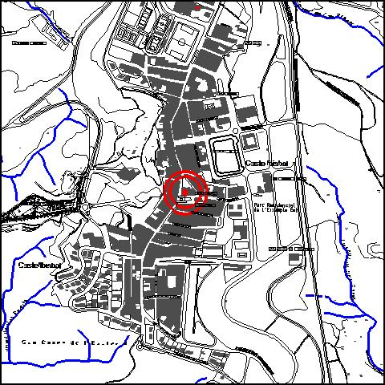

|
|
 |
Nom de l’element: Església de St. Vicenç i rectoria
Clau d’identificació: A.20
Nucli o indret: laça de l’Església 1 i 3.
UTM: X= 414.981, Y= 4.592.209, 155 m snm.
Règim del sòl: sòl urbà.
1.1. Època de construcció i tipologia:
Església dedicada a Sant Vicenç, construïda entre el 1580 i 1598. Es diu que la parròquia és originària del segle IX i que a l’any 1501, va fer construir l’església Guislabert, bisbe de Barcelona, per haver patit danys durant l’ocupació sarraïna. Consta d’una gran nau rectangular amb voltes de creueria nervades. A l’ala dreta té un cos afegit d’època més moderna. Els murs són de pedra i les cobertes de teula. L’absis i les voltes són d’estil gòtic, mentre que les arcades laterals i la façana són neoclàssiques. Les dues columnes amb capitells jònics de la portalada original van desaparèixer l’any 1936. La rectoria fou reformada al 1850. El campanar és de base quadrada i està rematat amb marlets, i es troba adossat a la façana principal. Abans del 1936, l’església lluia un altar major renaixentista de molta qualitat artística, que il·lustrava aspectes del martiri de Sant Vicenç. Fins la meitat del s. XIX hi va romandre el cementiri al davant de l’església.
1.2. Estat de conservació:
Bo. Les estructures portants, els forjats, les voltes, les cobertes i el paviment presenten un estat de conservació mitjà. Al 1758 va ser destruïda degut a un incendi i es va refer de nou. Al 1904 va patir una restauració i al 1946 es va reconstruir la rectoria, malmesa per un bombardeig el 24 de gener de 1939.
1.3. Ús actual:
Religiós, recreatiu, cultural, residencial, social.
1.4 Serveis i accessibilitat de la finca:
Accés fàcil, Plaça de l’Església 1-3.
AL’església és l’edifici més antic de la població, presentant elements d’estil gòtic i neoclàssic.
3.1. Usos admesos:
Ús religiós, residencial, recreatiu cultural-social.
3.2. Condicions d’ordenació:
Segons Pla Especial a redactar.
3.3. Accés i serveis:
Accés des de la Plaça de l’Església 1-3. Disposa d’electricitat i aigua.
BPU (Bé Protegit Urbanísticament)